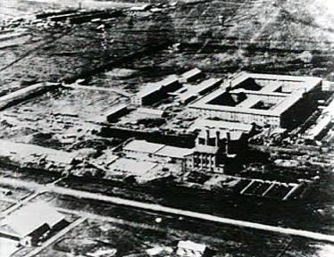
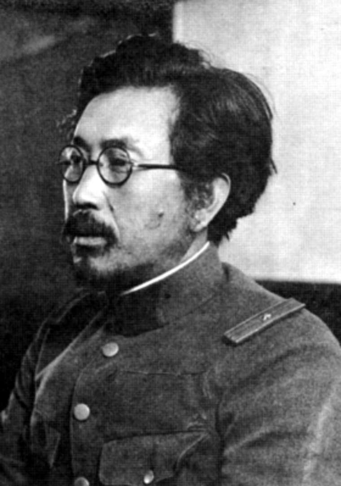

Introduction to Unit 731 and Its Significance
Unit 731 was a covert biological and chemical warfare research unit of the Imperial Japanese Army during World War II. Operating between 1937 and 1945 in occupied China, primarily in the city of Harbin, Unit 731 conducted gruesome human experimentation and committed war crimes on a large scale. Led by Lieutenant General Shiro Ishii, the unit conducted research in various areas, including biological weapons, vivisection, frostbite testing, and weaponized plague.
The significance of Unit 731 lies in its horrifying actions, which involved the torture, suffering, and deaths of thousands of innocent civilians and prisoners of war. The experiments conducted by the unit were often conducted without anesthesia or any regard for human life. Unit 731's activities were kept secret for many years, and the information that eventually came to light exposed the extent of its atrocities and shocked the world.
Historical Background: This section provides a comprehensive overview of the historical context in which Unit 731 operated. It explores the events leading up to the establishment of the unit and the geopolitical climate of World War II.
Unit 731 Operations: Here, visitors can delve into the operations and activities carried out by Unit 731. It covers the various experiments conducted, the victims involved, and the methods employed by the unit in its pursuit of biological warfare research.
Testimonies and Survivor Stories: This section presents firsthand accounts from survivors of Unit 731's experiments, shedding light on the unimaginable suffering they endured. These testimonies humanize the victims and highlight the long-lasting impact of the unit's actions.
Aftermath and Justice: Visitors can explore the aftermath of Unit 731's activities, including the legal proceedings that followed the end of World War II. It examines the attempts to bring the perpetrators to justice and the implications of the unit's actions on international law.
Lessons Learned: This final section reflects on the lessons learned from the atrocities committed by Unit 731. It explores the ethical considerations surrounding human experimentation, the importance of remembering historical atrocities, and the efforts to prevent the recurrence of such acts in the future
Unit 731 Compound
War Crimes
Location
Japan occupied Pingfang, 45°36′30″N 126°37′55″E
Existance
1936 - 1945
Death Count
200 000 or 300 000
Perpetrators
Surgeon General Shirō Ishii
Lt. Gen. Masaji Kitano
Epidemic Prevention and Water Purification Department